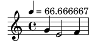
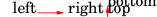
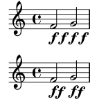
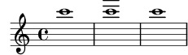
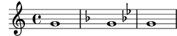

| [ << New for specialist notation ] | [Top][Contents] | [ >> ] |
| [ < New for specialist notation ] | [ Up: Top ] | [ > ] |
Miscellaneous improvements
- The
\tempocommand now accepts exact rational values. The default formatter rounds to the nearest 0.25; the context propertytempoCountPrecisioncontrols this.\fixed c' { \once \set Timing.tempoCountPrecision = #1/1000000 \tempo 4 = #200/3 g4 e2 f4 }

- The new Scheme function
ly:parser-define-once!defines a variable if it is not already defined. - The
timeSignatureFractioncontext property is deprecated in favor oftimeSignature. The new property accepts subdivided and alternating time signatures in addition to the simple fractions that the old property accepted. Accessing the old property transparently derives a simple fraction from the new property and triggers a warning. -
(make-music 'Music)and(make-music 'Event)now create music expressions that have thevoidproperty set to#tby default. The functionempty-musichas been removed in favor of(make-music 'Music). The new predicateunspecified-music?recognizes any music expression with thevoidflag set. - The new Scheme function
ly:number->durationconverts a duration expressed in units of whole notes to aly:duration. The log, number of dots, and scaling factor are chosen automatically. - The markup commands
\hspaceand\vspaceare used to insert space, which may be negative. Other objects are moved accordingly. This movement may be indicated by arrows printed by the new markup commandannotate-moving. Note that the arrows do not reflect the actual extents of the objects created by\vspaceand\hspace; you might use\boxfor that.\markup { left \annotate-moving \hspace #4 right \column { top \annotate-moving \vspace #-4/3 bottom } }

- The new
\contextPropertyCheckcommand verifies that a property is set to an expected value or is unset in a specific context. - Various context properties that previously held
ly:momentvalues now hold rational numbers. To ease this transition, each number property is paired with a fallbackly:momentproperty. Using the fallback property transparently accesses the number property and triggers a warning.Deprecated Context Property New Context Property baseMomentbeatBasecompletionUnitAsMomentcompletionUnitgridIntervalAsMomentgridIntervalmeasureLengthAsMomentmeasureLengthminimumPageTurnLengthpageTurnMinimumRestLengthminimumRepeatLengthForPageTurnpageTurnMinimumRepeatLengthproportionalNotationDurationAsMomentproportionalNotationDurationtempoWholesPerMinuteAsMomenttempoWholesPerMinutetupletSpannerDurationAsMomenttupletSpannerDurationvoltaSpannerDurationAsMomentvoltaSpannerDuration -
\tempo dur = min - maxused to set the context propertytempoWholesPerMinuteafter rounding the center of the range to the nearest integer. It no longer rounds. This is expected to change the MIDI tempo in certain cases. - The Scheme functions
duration-lengthandly:duration-lengthare renamed toly:duration->numberandly:duration->moment, respectively. - The new Scheme function
ly:parser-append-to-include-pathappends its argument to the current parser’s include path. - The value of the
timeSignatureSettingscontext property uses the symbolbeatBasewhere it formerly usedbaseMoment.convert-lydoes not address this change. - Embedding PNG images is now supported using the new
\imagemarkup command. This supplements the existing\epsfilecommand for EPS images.\imageworks for both PNG and EPS images. For EPS images, the difference between using\imageand\epsfileis that\imageadds a white background by default, while\epsfiledoes not. - The new
\qr-codemarkup command inserts a QR code of the specified size for the specified URL. This can be used to link to, e.g., the website of a composer or publisher, the LilyPond source files for the score, recordings, etc.\markup \qr-code #10 "https://lilypond.org"
- Parentheses for text markup have been added to the Emmentaler fonts, which harmonize with digits (in contrast to the already available parentheses for accidentals).
- Glyphs for a figure-dash (U+2012), an en-dash (U+2013), and a slash (U+002F) have been added to the Emmentaler fonts.
- A figure space (U+2007), a thin space (U+2009), and a hair space (U+200A) have been added to the Emmentaler fonts.
- The
-dinclude-settingsoption can now be given multiple times to include several stylesheets. - In the LaTeX backend of
lilypond-book, all inline images are now vertically shifted. The amount can be controlled globally with command-line option --inline-vshift and locally with an argument to the snippet optioninline. - It is possible to use various command-line options of
musicxml2lyas options forlilypond-book’smusicxmlfilecommand. This was actually introduced in version 2.15.9 (in 2011) but stayed undocumented until now. - Two new command-line options -dfirst and -dlast
have been introduced; they are equivalent to setting
showFirstLengthandshowLastLength, respectively, in a LilyPond input file. For example, sayinglilypond -dlast=R1*5 ...
makes LilyPond render only the last five measures (assuming a 4/4 time signature).
- A visual index of all LilyPond graphical objects (grobs) is now available as a manual. This is based on Joram Berger’s work for LilyPond 2.19.
- LilyPond provides support for in-notes, i.e., footnote-like annotations between music systems. This isn’t new (it has actually been available since version 2.15.17, published in 2011) but it had some flaws and wasn’t documented until now.
- The
lilysongscript has been removed. Besides lacking any documentation, it hasn’t been maintained for a long time. Additionally, it has been using an external speech synthesis program calledfestival, which is no longer maintained either. - Two new spacing styles are available for the
space-alistgrob property:shrink-spaceandsemi-shrink-space; these spaces only shrink and don’t stretch. They are also used directly in LilyPond, improving the formatting of tightly spaced staves. - The
lilypondbinary has a new command-line option -dstaff-size to set the global staff size, equivalent to settingset-global-staff-sizein a LilyPond input file. - Instead of the functions
\bookOutputNameand\bookOutputSuffixwe now recommend using the paper variablesoutput-filenameandoutput-suffix(which are not new but stayed undocumented until now). While the former will work unchanged, the latter is more coherent and easier to understand, especially if combined with predefined paper variables. - The
Stem.details.lengthsproperty now also accepts pairs as list elements, allowing to set the length for up and down stems separately. - The
ly:self-alignment-interface::aligned-on-x-parentfunction (used by many grobs to compute the x-offset) now listens to a newPaperColumnproperty calledX-alignment-extent. Set by default, it provides a fallback width for thePaperColumngrob in case it doesn’t contain note heads. This helps align dynamic scripts that are attached to spacer rests, for example.music = \new Staff << { f'2 g'2 } { s4\f s\f s\f s\f } >> \score { \music } \score { \music \layout { \context { \Score \override PaperColumn.X-alignment-extent = ##f } } }

-
BassFigureContinuationgrobs now supporthorizontal-line-spanner-interface; thepaddingproperty has been replaced with the corresponding subproperties inbound-details. - The
\align-on-othermarkup command now accepts#fas a value for the alignment, indicating a markup’s reference point. - A new function
\withRelativeDiris now available for markup commands that include files, and where such files should be found relative to the input file. Example:\markup { \image #X #3 \withRelativeDir "test.png" } - The positioning of horizontal (analysis) brackets has been
improved; in particular, the
HorizontalBracketgrob now has anoutside-staff-priorityvalue of 800. As a consequence, however, nested horizontal brackets might be positioned differently than before. You can fix this by adjustingoutside-staff-priorityvalues with\tweak(where the outermost bracket should get the highest priority value). - A new Scheme function
to-staff-spaceis provided to convert absolute dimensions (in various units) to staff-space units. Examples:top-markup-spacing.basic-distance = #(to-staff-space 2 'cm) % default unit is pt \markup \override #`(baseline-skip . ,(to-staff-space 20)) \column { foo bar } - Two new markup functions
\abs-hspaceand\abs-vspaceare available to provide absolute dimensions that stay the same regardless of the current staff size. - The data emitted by the command-line option -dshow-available-fonts is now sent to standard output.
- The function
ly:font-config-display-fontsnow takes an optional argument for output port selection. - Scheme command-line option handling is now more robust. In the
course of the new implementation, some minor changes were
necessary.
- − On the command line, the argument for the -dpaper-size
option no longer needs to be extra-quoted, i.e., a call like
-dpaper-size=a3works just fine. - − The pixmap-format option now expects a string as a value,
not a symbol. No change on the command line, but a call like
#(ly:set-option 'pixmap-format 'pngalpha)
must be changed to
#(ly:set-option 'pixmap-format "pngalpha")
The same holds for options separate-page-formats and tall-page-formats. Note that
convert-lycan handle this automatically.
- − On the command line, the argument for the -dpaper-size
option no longer needs to be extra-quoted, i.e., a call like
- The
side-position-interfacenow offers two new properties,X-paddingandminimum-X-space, to control the horizontal padding and minimum distance to a grob’s parent object, independently of the vertical padding and minimum distance. This is useful for grobs likeFingeringthat can be attached either horizontally or vertically to note heads, and which need different padding values for the X- and Y-axis, respectively. -
\pushContextPropertyand\popContextPropertyare two new commands for manipulating context properties. The first one pushes the current value to a stack, while the second one pops off the value from the stack and uses it to restore the property.{ c' \pushContextProperty Staff.fontSize \set Staff.fontSize = 3 c' \pushContextProperty Staff.fontSize \set Staff.fontSize = 6 c' \popContextProperty Staff.fontSize c' \popContextProperty Staff.fontSize c' }
![[image of music]](../1d/lily-f312dbf7.png)
- A new grob property
whiteout-coloris available to set the color used for white-out operations. Similarly, the\whiteoutmarkup command now listens to acolorproperty to do the same. - The
musicxml2lyscript has been completely revised to better convert MusicXML to LilyPond. It now supports more MusicXML features and elements and tries to be more faithful in the conversion, retaining more of the original appearance if possible (and sensible).Here is a list of some notable changes (not taking bug fixes into account).
- − The script is now much faster.
- − Overlapping and nested slurs work as expected.
- − Better automatic support of circumventing LilyPond’s infamous issue #34 (i.e., synchronization of grace note timing between staves at the beginning of a piece).
- − Support of two-stem tremolos and nested tuplets.
- − Color and font size support for almost all MusicXML elements. A new command-line option --dynamics-scale helps compensate glyph size differences of dynamics signs in various music fonts.
- − Correct handling of ottava endings for MusicXML files
created by Finale. The script looks at the
<software>element to detect the used notation software. If necessary, this can be overridden with the new command-line option --ottavas-end-early. - − Option --shift-meter has been replaced with option --shift-durations, using a simpler syntax.
- − New command-line option --no-tagline to suppress the output of a LilyPond tagline.
- − New command-line option --book to wrap the
top-level score with
\book. - − If
<credit>elements are present, they now fill the fields in LilyPond’s\headerblock instead of metadata elements like<work-title>or<creator>. - − New command-line option --credit-page to specify
the page from which LilyPond should take
<credit>data to fill the\headerblock. - − All metadata elements that are not mapped to standard
\headerfields (and which are not ignored like the ‘page number’ type) are output with more consistent field names: the prefix ‘id: ’ is used for<identification>children, ‘credit: ’ for<credit>elements, and the MusicXML element name (without a prefix) in all other cases. As a consequence, some (unused) fields got new names.old new movementnumbermovement-numberencodingsoftwareid: softwareencodingdateid: encoding-dateencoderid: encoderencodingdescriptionid: encoding-descriptionsourceid: source - − The bar numbers shown as comments in the created LilyPond input file are now as expected, i.e., the values shown refer to the previous bar.
- The markup command
\page-refhas a new propertyx-alignto control the X-alignment of the gauge replacement.\markup { \box \page-ref #'foo "???" "?" " right-aligned (default)" } \markup { \box \override #`(x-align . ,LEFT) \page-ref #'foo "???" "?" " left-aligned" } \markup { \box \override #'(x-align . -2.5) \page-ref #'foo "???" "?" " left outside" }
![[image of music]](../aa/lily-9e39b24a.png)
- It is now also possible to set the
ledger-extraproperty via theNoteHeadgrob.\score { { c'''1 \tweak ledger-extra #4 c'''1 c'''1 } }

- For grob
NonMusicalPaperColumn, the subpropertybottom-spaceof theline-break-system-detailsproperty has been renamed tobottom-padding. While available since version 2.13.4 (released in 2009) it wasn’t documented before. - It is now possible to modify tag groups created with
\tagGroupor\tagGroupRefby using the commands\resetTagGroups,\resetTagGroup,\addToTagGroup, and\removeFromTagGroup. - The current input language (as selected with
\language) can be accessed in the new Scheme variableinput-language(as a symbol). - The new function
\breakAlignInsertmakes it easy to change the order of notational elements like clefs, time signatures, bar lines etc. Previously, this required re-defining theScore.BreakAlignment.break-align-ordersvector.{ g'1 \key f \major g' \breakAlignInsert staff-bar after key-signature \key g \minor g' }

- The output option -dcrop now takes all stencils into account while calculating the bounding box. This can change the size of cropped output.
- These functions, which have been deprecated since version 2.13.19,
have been removed:
\deprecatedcresc,\deprecatedendcresc,\deprecateddim, and\deprecatedenddim.
For older news, go to https://lilypond.org/doc/v2.22/Documentation/changes/, or go back to the Documentation index.
| [ << New for specialist notation ] | [Top][Contents] | [ >> ] |
| [ < New for specialist notation ] | [ Up: Top ] | [ > ] |